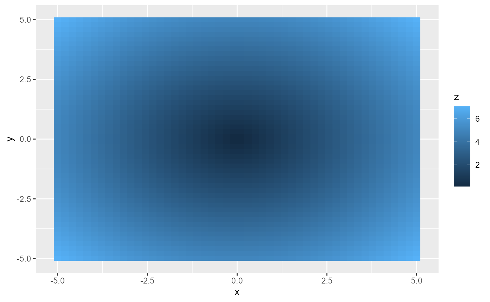
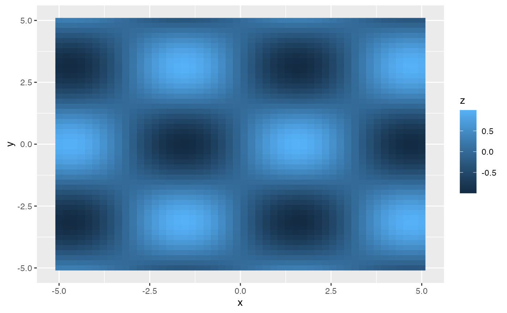
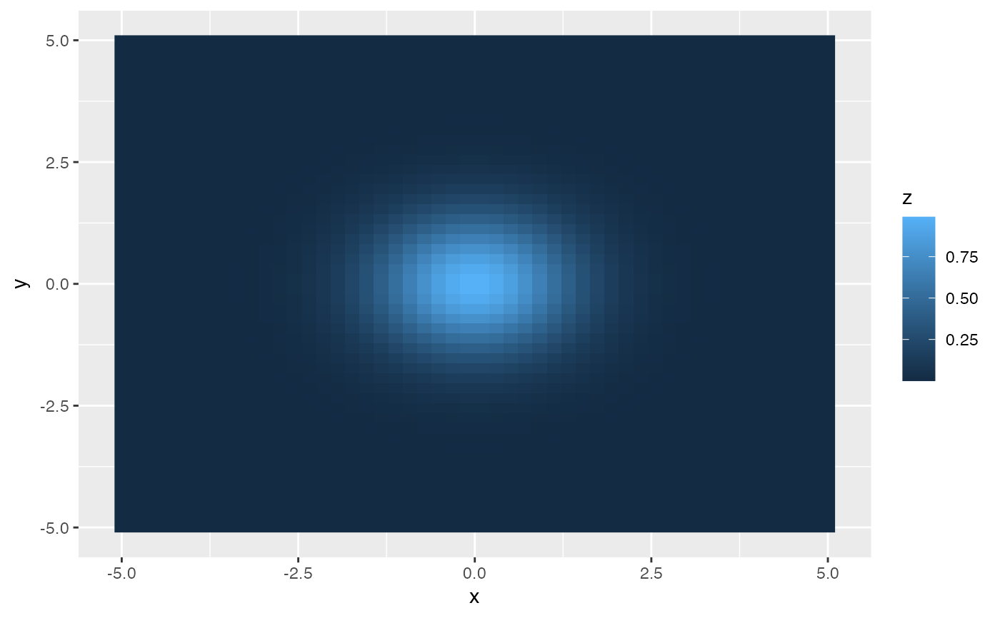
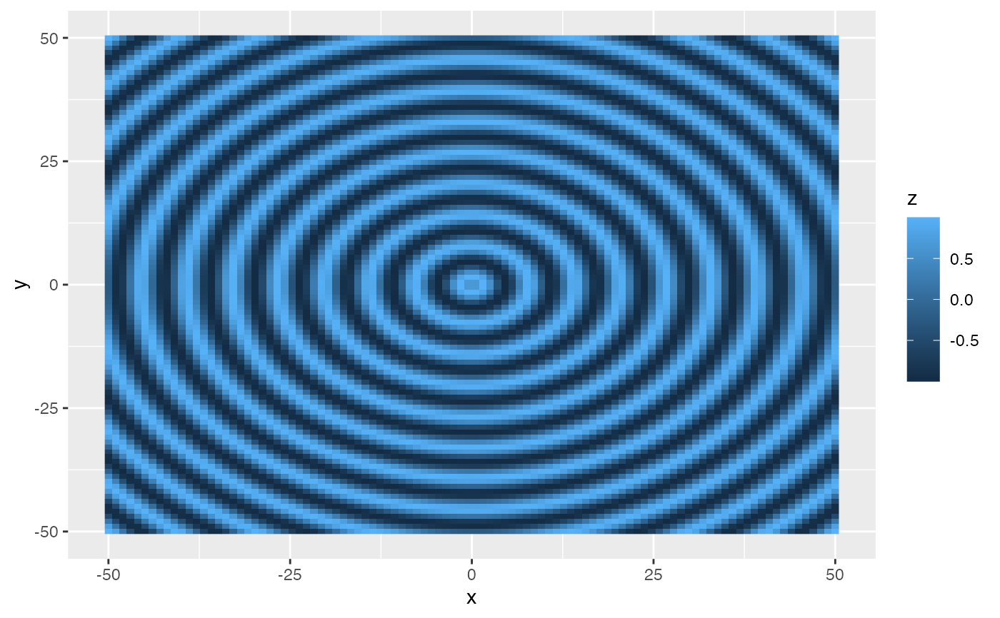
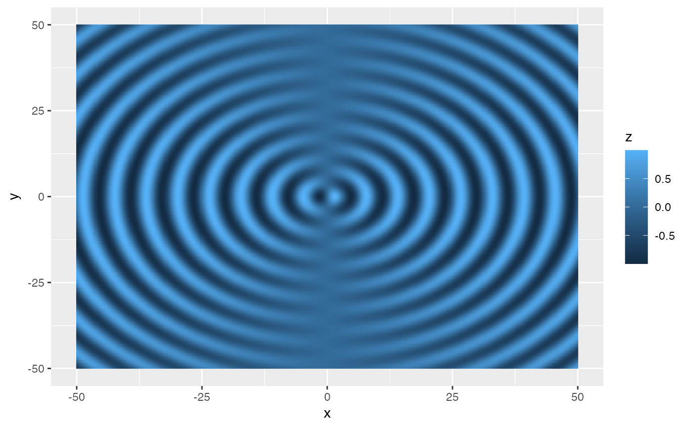
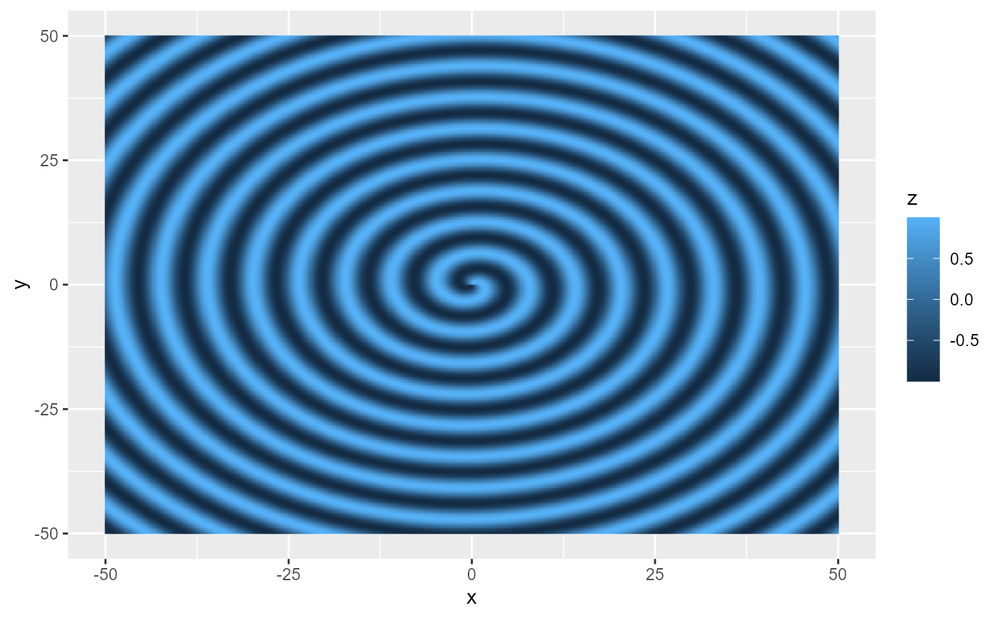

Create a 2D Function Visualization Layer of the Norm of a Vector Field
Source:R/geom_function_2d_1d.R
geom_function_2d_1d.Rdgeom_function_2d_1d adds a layer to visualize 2D functions or vector fields in a ggplot2 plot.
Usage
geom_function_2d_1d(
mapping = NULL,
data = NULL,
stat = StatFunction2d,
geom = GeomFunction2d,
...,
position = "identity",
fun = NULL,
xlim = NULL,
ylim = NULL,
n = NULL,
type = "raster",
bins = NULL,
binwidth = NULL,
breaks = NULL,
show.legend = TRUE,
inherit.aes = TRUE
)
stat_function_2d_1d(
mapping = NULL,
data = NULL,
geom = GeomFunction2d,
position = "identity",
...,
na.rm = FALSE,
show.legend = NA,
inherit.aes = TRUE,
fun = NULL,
xlim = c(-1, 1),
ylim = c(-1, 1),
n = 50
)
StatFunction2d
GeomFunction2d
StatFunction2dContour
StatFunction2dContourFilledFormat
An object of class StatFunction2d (inherits from Stat, ggproto, gg) of length 3.
An object of class GeomFunction2d (inherits from GeomRaster, Geom, ggproto, gg) of length 2.
An object of class StatFunction2dContour (inherits from StatContour, Stat, ggproto, gg) of length 5.
An object of class StatFunction2dContourFilled (inherits from StatContourFilled, Stat, ggproto, gg) of length 5.
Arguments
- mapping
Aesthetic mappings, created using
aes(). IfNULL, defaults are used.- data
Optional data frame to override the default data source.
- stat
Statistical transformation to use. Defaults to
StatFunction2d.- geom
Geom used for rendering. Defaults to
GeomFunction2d.- ...
Other arguments passed to the layer, such as additional parameters.
- position
Position adjustment for the layer. Defaults to
"identity".- fun
A function that takes a matrix of x, y values and returns a matrix of dx, dy values.
- xlim
Numeric vector of length 2 specifying the x-range of the grid. Required if
funis provided.- ylim
Numeric vector of length 2 specifying the y-range of the grid. Required if
funis provided.- n
Number of points in the grid along each axis. Defaults to
50instat_function_2d_1d.- type
Character. Type of visualization:
"raster"(default),"contour", or"contour_filled".- bins
Number of contour bins. Only used when
typeis"contour"or"contour_filled".- binwidth
Width of contour bins. Only used when
typeis"contour"or"contour_filled".- breaks
Numeric vector of specific contour break values. Only used when
typeis"contour"or"contour_filled".- show.legend
Logical. Should this layer be included in the legends?
NAincludes if aesthetics are mapped.- inherit.aes
If
FALSE, overrides default aesthetics rather than combining them.- na.rm
Logical. Should missing values be removed? Defaults to
FALSE.
Examples
# Function that calculates the norm
f <- function(v) {
x <- v[1]
y <- v[2]
c(sqrt(x^2 + y^2))
}
ggplot() +
geom_function_2d_1d(fun = f, xlim = c(-5, 5), ylim = c(-5, 5))

# Sinusoidal combination of sine and cosine
f_sin_cos <- function(v) {
x <- v[1]
y <- v[2]
sin(x) * cos(y)
}
ggplot() +
geom_function_2d_1d(fun = f_sin_cos, xlim = c(-5, 5), ylim = c(-5, 5))

# Gaussian bump function
f_gaussian <- function(v) {
x <- v[1]
y <- v[2]
exp(-(x^2 + y^2) / 2)
}
ggplot() +
geom_function_2d_1d(fun = f_gaussian, xlim = c(-5, 5), ylim = c(-5, 5))

# Radial sine wave function
f_radial_wave <- function(v) {
x <- v[1]
y <- v[2]
r <- sqrt(x^2 + y^2)
sin(r)
}
# Some functions need more resolution for clarity
ggplot() +
geom_function_2d_1d(fun = f_radial_wave, xlim = c(-50, 50), ylim = c(-50, 50), n = 100)

# Complex combination of radial and angular components
f_complex <- function(v) {
x <- v[1]
y <- v[2]
r <- sqrt(x^2 + y^2)
theta <- atan2(y, x)
sin(r) * cos(theta)
}
ggplot() +
geom_function_2d_1d(fun = f_complex, xlim = c(-50, 50), ylim = c(-50, 50), n = 500)

# Spiral pattern function
f_spiral <- function(v) {
x <- v[1]
y <- v[2]
r <- sqrt(x^2 + y^2)
theta <- atan2(y, x)
sin(r + theta)
}
ggplot() +
geom_function_2d_1d(fun = f_spiral, xlim = c(-50, 50), ylim = c(-50, 50), n = 500)
